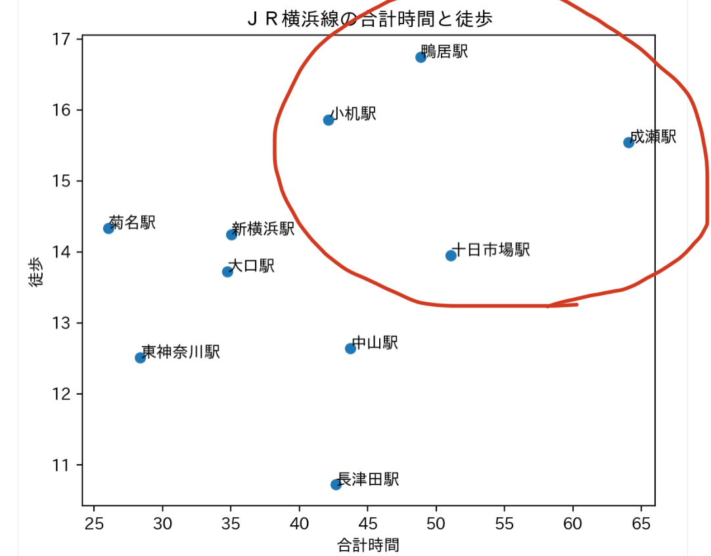
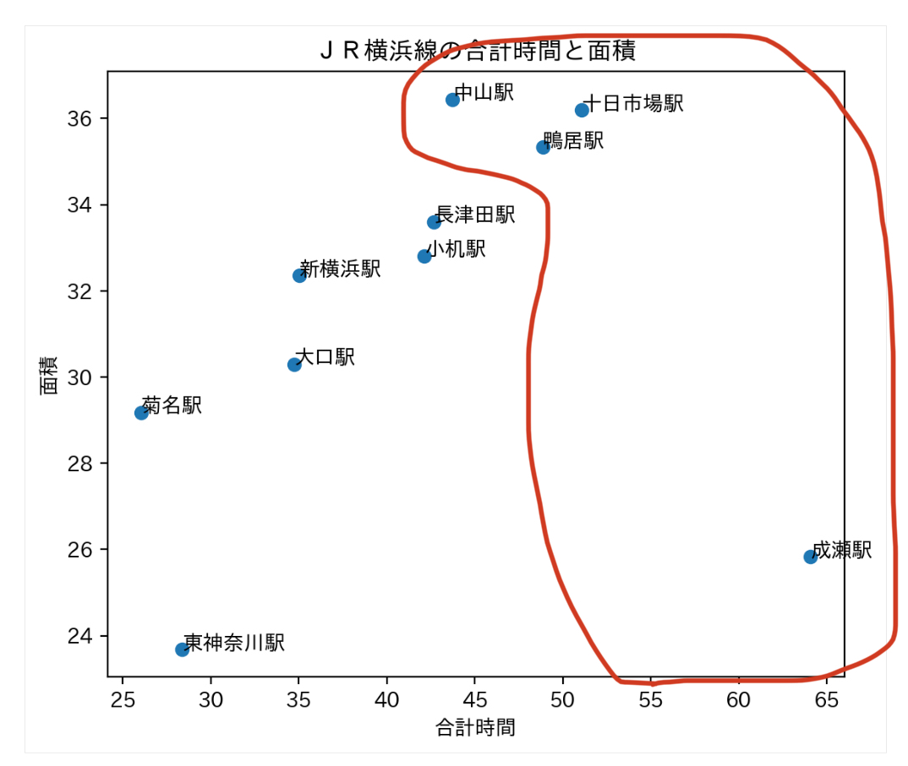
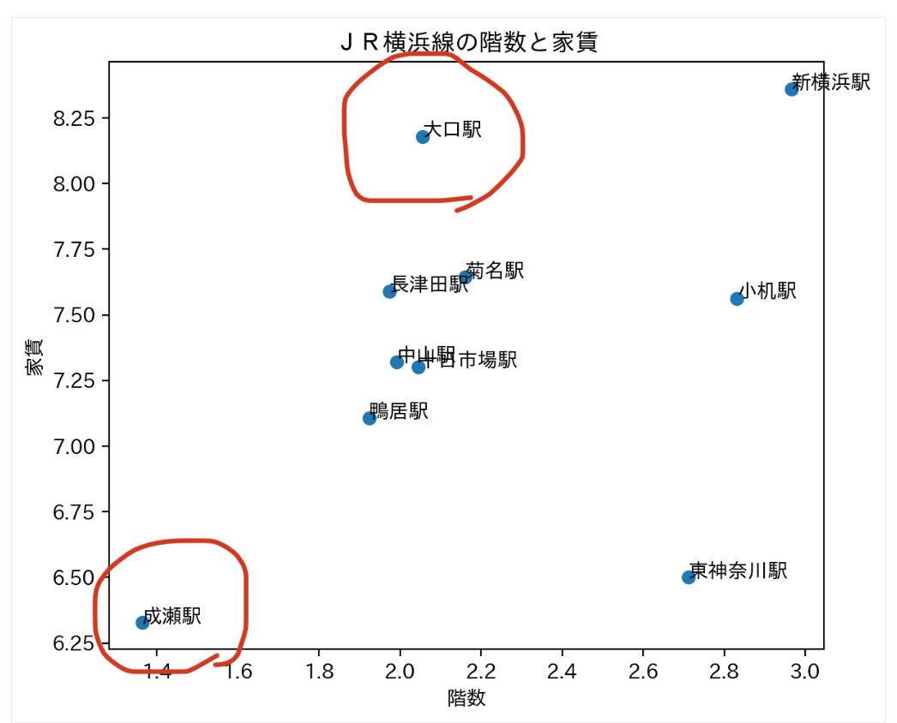
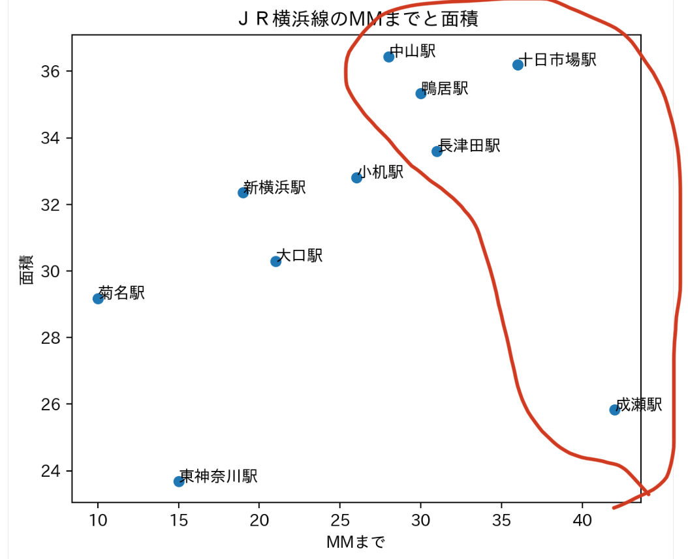
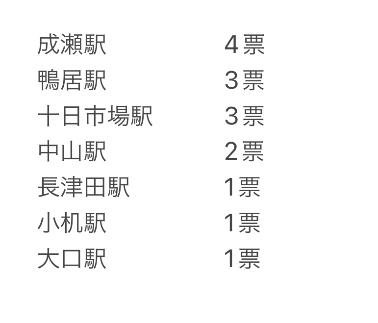

自分たちの最寄りの路線で最も住みにくい駅を探そう！！
この題材にしたきっかけ
住みやすい駅を探す方が一番データを取りやすいと思ったが、それでは普通すぎる。と思い、
私たちの班はあえて”住みにくい”駅を探すことを選んだ。
今回調べた路線
私が普段使っている横浜線のデータを使って住みにくい駅を探そうと思う。
データ一覧




赤丸で印をつけている駅が住みにくい駅の候補である。
分かりやすく数えてみると

結果
成瀬駅が４票という全部の枠でランクインしているなど、
とても住みにくい駅だということが分かった。